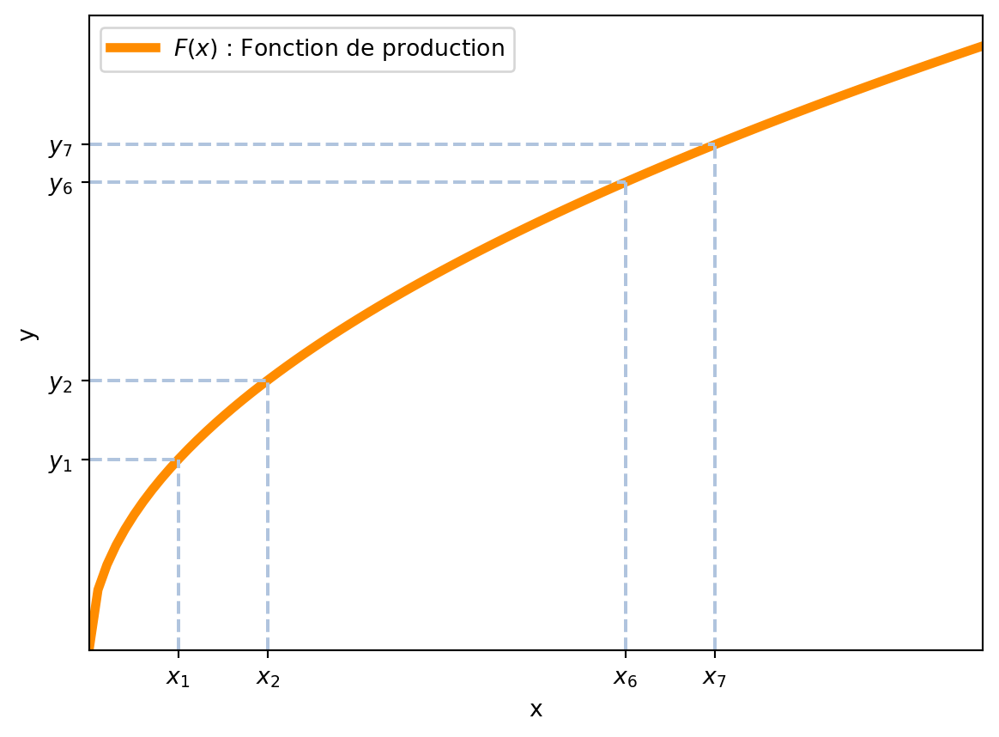
3 Le modèle classique
Pour comprendre les raisons qui ont amené à la création du modèle IS-LM, il est d’abord nécessaire de comprendre les limites du modèle qui le précédait : le modèle classique.1
Notre point de départ est la crise de 1929 : après des années de croissance économique aux USA, beaucoup de ménages avaient investi dans la bourse (même en s’endettant). Entre le 24 et le 29 octobre 1929, la bourse de New York subit une crise boursière, avec des pertes de valeur de plus de 22%. Cette débâcle marqua le début de la Grande Dépression, une période de profond marasme économique qui mit en évidence les insuffisances du modèle classique pour expliquer et gérer les fluctuations économiques.
À la suite de cette crise boursière, la demande globale chuta drastiquement, entraînant une baisse significative de la consommation et de l’investissement. De nombreuses entreprises furent contraintes de fermer leurs portes, incapables de soutenir leur activité dans un environnement de demande réduite. Ce phénomène provoqua une augmentation massive du chômage, laissant des millions de personnes sans emploi. Le modèle classique, qui reposait sur l’hypothèse d’ajustements automatiques des marchés vers un équilibre naturel, ne parvenait pas à expliquer ni à remédier à ces déséquilibres prolongés. L’incapacité du modèle classique à fournir des solutions efficaces à la crise de 1929 a conduit les économistes à chercher de nouvelles approches pour comprendre et gérer les fluctuations économiques, ouvrant la voie à l’émergence du modèle IS-LM proposé par John Maynard Keynes.
Le modèle classique s’articule autour de trois équations fondamentales2:
- Équilibre dans le marché du travail
- Équilibre dans le marché de la monnaie
- Équilibre dans le marché de l’emprunt
Une idée clé du modèle classique est la croyance que les prix peuvent toujours s’adapter pour que la demande égalise l’offre dans n’importe quel marché. L’apport de Keynes à l’économie (d’où vient le modèle IS-LM) est l’idée contraire : dans le court terme, les prix sont fixes et ne changent pas. Ainsi, suite à un changement d’offre ou de demande, un nouvel équilibre réel est atteint.
3.1 Le marché de travail
3.1.1 Demande de travail
Les entreprises disposent d’une certaine quantité fixe de capital, qui est exogène au modèle. Elles maximisent leurs profits (\(\pi\)), qui dépendent du prix reçu par les ventes (\(p \times Y\)), du taux d’intérêt payé aux détenteurs de capital (\(r\)) et du salaire (\(w\)).
\[ \pi = p Y - r \bar{K} - w N \tag{3.1}\]
où \(\bar{K}\) est le stock de capital et \(N\) est le nombre d’emplois. On suppose qu’une fonction de production transforme les inputs en outputs: \[ Y = F(K, N) = F(\bar{K}, N) \tag{3.2}\]
La Figure 3.1 montre la relation entre le nombre de travailleurs et la production, car nous avons supposé que le capital est fixe au niveau \(\bar{K}\). La fonction de production est une fonction concave, c’est-à-dire que la production augmente avec le nombre de travailleurs, mais de moins en moins. Cette rélation selon laquelle la production augmente mais de moins en moins est appelée rendements décroissants. Les fonctions de production neo-classiques montrent toujours cette propriété, pour chaqun des facteurs de production.
Note
Les fonctions de production néo-classiques sont des fonctions de production qui présentent trois propriétés importantes:
Homogénéité de degré 1 signifie que si l’on double tous les facteurs de production (ici, le capital et le travail), alors la production double aussi : \(F(\lambda K, \lambda N) = \lambda F(K, N)\). Cela reflète l’absence d’économies ou de déséconomies d’échelle à long terme.
Production croissante dans chaque facteur signifie que si l’on augmente un seul facteur (par exemple, le travail \(N\)) en maintenant l’autre (le capital \(\bar{K}\)) constant, la production augmente. Mathématiquemet, la première dérivée par rapport à chaque facteur est positive: \(F_{N}(K, N) > 0\) et \(F_{K}(K, N) > 0\). Note: nous avons a écrit la dérivée partielle par rapport à \(K\) en lieu de \(\bar{K}\), car on peut imaginer que le capital est variable dans d’autres modèle en lieu de fixe.
Les rendements décroissants signifient que si l’on augmente un seul facteur (par exemple, le travail \(N\)) en maintenant l’autre (le capital \(K\)) constant, la production augmente mais de moins en moins vite. Mathématiquement, la dérivée seconde de la fonction de production par rapport à \(N\) est négative : \(F_{NN}(K, N) < 0\).
Dans le modèle classique, les entreprises maximisent leurs profits en choisissant le nombre de travailleurs \(N\), car le niveau de capital \(\bar{K}\) est fixe. En plus, vu qu’elles travaillent sur un marché concurrentiel, elles ne peuvent pas affecter les prix de l’économie: \(p, w, r\).
Note
Le modèle classique repose sur l’hypothèse que les marchés sont concurrentiels, ce qui signifie que les entreprises et les travailleurs n’ont pas de pouvoir de marché individuel pour influencer les prix. Dans un marché concurrentiel, les entreprises sont des preneurs de prix, ce qui signifie qu’elles acceptent le prix du marché pour leurs produits et services. De même, les travailleurs acceptent le salaire du marché pour leur travail.
De manière mathématique, les entreprises maximisent leurs profits en choisissant le nombre de travailleurs \(N\) qui maximise la fonction de profit \(\pi\).
\[ \max_{N} \pi = p F(\bar{K}, N) - r \bar{K} - w N \tag{3.3}\]
En prenant la dérivée de la fonction de profit par rapport à \(N\) et en l’égalant à zéro, on obtient la condition de premier ordre pour maximiser les profits. \[ \frac{\partial \pi}{\partial N} = p F_{N}(\bar{K}, N) - w = 0 \tag{3.4}\]
où \(F_{N}\) est la dérivée partielle de la fonction de production par rapport au nombre de travailleurs \(N\). En d’autres termes, la condition de maximisation des profits implique que le produit marginal du travail (PMT) doit être égal au salaire réel (\(\frac{w}{p}\)), autrement dit, le coût d’un travailleur supplémentaire. Ainsi, les profits sont maximisés lorsque le produit marginal du travail est égal au coût marginal du travail.
Note
Le produit marginal du travail (PMT) est la variation de la production totale résultant de l’ajout d’une unité supplémentaire de travail, en maintenant le capital constant. Il représente la contribution supplémentaire d’un travailleur à la production totale. Le coût marginal du travail est le coût supplémentaire associé à l’embauche d’un travailleur supplémentaire, qui est représenté par le salaire réel (\(\frac{w}{p}\)).
Imaginons pour un instant que le salaire réel soit supérieur au produit marginal du travail. Dans ce cas, les entreprises n’embaucheraient pas de travailleurs supplémentaires, car le coût d’embauche d’un travailleur supplémentaire serait supérieur à la valeur de la production qu’il générerait. Cela entraînerait une réduction de la demande de travail jusqu’à ce que le produit marginal du travail soit égal au coût marginal du travail.
Et à l’inverse, si le salaire réel est inférieur au produit marginal du travail, les entreprises seraient incitées à embaucher davantage de travailleurs, car le coût d’embauche serait inférieur à la valeur de la production qu’ils généreraient. Cela entraînerait une augmentation de la demande de travail jusqu’à ce que le produit marginal du travail soit égal au coût marginal du travail.
Si l’on réarrange l’équation de maximisation des profits, on obtient la condition d’optimalité pour le nombre de travailleurs:
\[ F_{N}(\bar{K}, N) = \frac{w}{p} \tag{3.5}\]
Cette équation est l’équation de demande de travail: elle indique combien de travailleurs les entreprises souhaitent embaucher en fonction du salaire réel (\(\frac{w}{p}\)) et de la technologie (représentée par la fonction de production \(F\)). La fonction de demande de travail est décroissante par rapport au salaire réel, ce qui signifie que lorsque le salaire réel augmente, la demande de travail diminue. En effet, si le salaire réel augmente, les entreprises sont moins incitées à embaucher des travailleurs supplémentaires, car le coût d’embauche devient plus élevé par rapport à la valeur de la production qu’ils génèrent. Nous notons la demande de travail par \(N^d = f\left(\frac{w}{p}\right)\).
La demande de travail est décroissante
Nous avons indiqué que la demande de travail est décroissante par rapport au salaire réel et nous pouvons le montrer de manière mathématique. En effet, on se demande si \(N^d\) augmente ou diminue lorsque \(\frac{w}{p}\) augmente, c’est-à-dire, si la dérivée de \(N^d\) par rapport à \(\frac{w}{p}\) est positive ou négative. Malheureusement, nous ne connaissons pas la fonction \(f\), mais nous pouvons utiliser la condition de maximisation des profits pour le savoir. Nous savons que \(F_{N}(\bar{K}, N) = \frac{w}{p}\). Si nous calculons la différentiation totale de cette équation (par rapport à \(N\) et \(\frac{w}{p}\)), nous obtenons:
\[ F_{NN}(\bar{K}, N) \mathrm{d}N + \overbrace{F_{N, \frac{w}{p}}(\bar{K}, N)}^{=0} \mathrm{d}\frac{w}{p} = \overbrace{\frac{\partial \frac{w}{p}}{\partial \frac{w}{p}}}^{=1} \mathrm{d}\frac{w}{p} + \overbrace{\frac{\partial \frac{w}{p}}{\partial N}}^{=0} \mathrm{d}N \]
Cette équation se réduit à:
\[ F_{NN}(\bar{K}, N) \mathrm{d}N = 1 \mathrm{d}\frac{w}{p} \]
Et donc:
\[ \frac{\partial \mathrm{d}N}{\partial \frac{w}{p}} = \frac{1}{F_{NN}(\bar{K}, N)} \]
Comme \(F_{NN}(\bar{K}, N) < 0\) (à cause des rendements décroissants), on a que \(\frac{\partial \mathrm{d}N}{\partial \frac{w}{p}} < 0\).
Ainsi, la demande de travail est décroissante par rapport au salaire réel, tel que représenté dans la Figure 3.2.
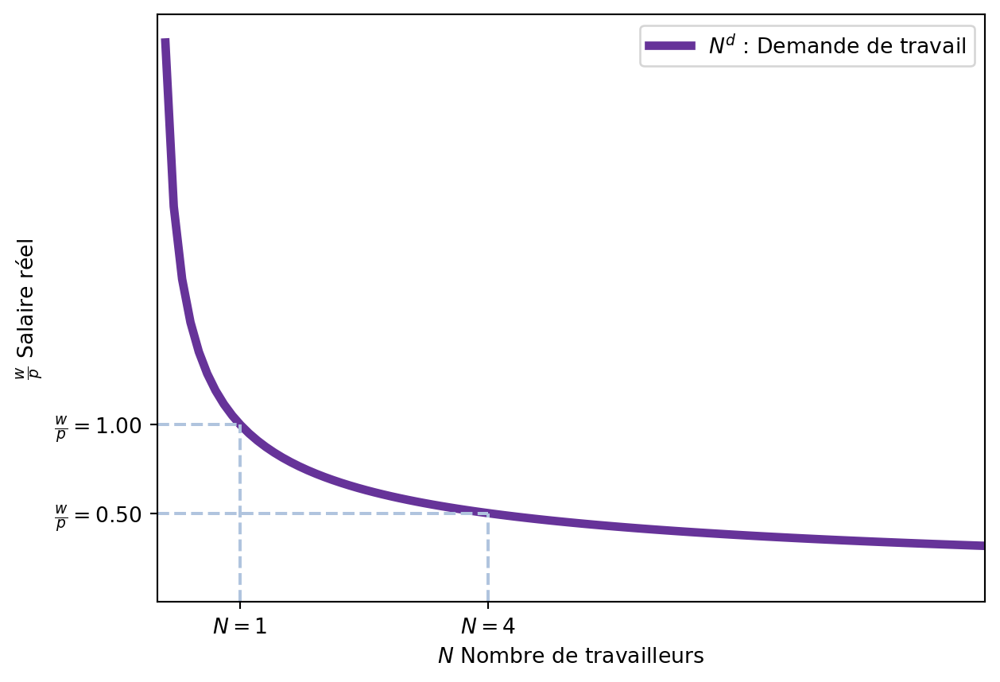
Par exemple, si le salaire réel est de 0.5, les entreprises souhaitent embaucher 4 travailleurs. Cependant, si le salaire réel augmente à 1.0, les entreprises ne souhaitent embaucher que 1 travailleur.
3.1.1.1 Exemple
Imaginons que l’économie dispose de 4 unités de capital (\(\bar{K} = 4\)), et que la fonction de production est \(F(\bar{K}, N) = \bar{K}^{0.5} N^{0.5} = 2 N^{0.5}\). Nous pouvons calculer la demande de travail en fonction du salaire réel. Nous savons que les entreprises maximisent leurs profits:
\[ \max_{N} \pi = p F(\bar{K}, N) - r \bar{K} - w N = p 2 N^{0.5} - r \bar{K} - w N \]
En prenant la dérivée de la fonction de profit par rapport à \(N\) et en l’égalant à zéro, on obtient la condition de premier ordre pour maximiser les profits.
\[ \frac{\partial \pi}{\partial N} = p N^{-0.5} - w = 0 \]
Et donc, la demande de travail en fonction du salaire réel \(\left(\frac{w}{p}\right)\) est:
\[ N^d = \left(\frac{p}{w}\right)^2 = \left(\frac{w}{p}\right)^{-2} \]
3.1.2 Offre de travail
La demande de travail est déterminée par les entreprises, mais l’offre de travail est déterminée par les travailleurs. Les travailleurs sont des agents économiques qui souhaitent maximiser leur utilité. Ils offrent du travail pour gagner un salaire avec lequel acheter des biens et services. En travaillant, ils renoncent au temps de loisir. Ainsi, les travailleurs arbitrent entre le temps de loisir et ce qu’ils peuvent acheter avec le salaire.
L’offre de travail est une fonction croissante du salaire réel (\(\frac{w}{p}\)). En effet, si le salaire réel augmente, les travailleurs sont incités à travailler plus car ils peuvent acheter plus de biens et services. De plus, si le prix des biens diminue, les travailleurs sont incités à travailler plus car ils peuvent acheter plus de biens et services avec le même salaire.
Note
Ceci n’est qu’une simplification. En réalité, quand le salaire réel change, deux effets se produisent:
- Effet de substitution: Si le salaire réel augmente, le coût d’opportunité du loisir augmente, ce qui incite les travailleurs à travailler plus.
- Effet de revenu: Si le salaire réel augmente, les travailleurs peuvent se permettre de travailler moins tout en maintenant leur niveau de vie, ce qui les incite à travailler moins.
En général, nous avons que l’effet de substitution est plus fort que l’effet de revenu. Notamment, en macroéconomie, on prend en compte la totalité des travailleurs et non pas un seul. Ainsi, un salaire réel plus élevé aux chômmeurs à joindre le marché du travail.
La fonction d’offre de travail est donc croissante par rapport au salaire réel, ce qui signifie que lorsque le salaire réel augmente, l’offre de travail augmente également. Nous notons l’offre de travail par \(N^s = g\left(\frac{w}{p}\right)\).
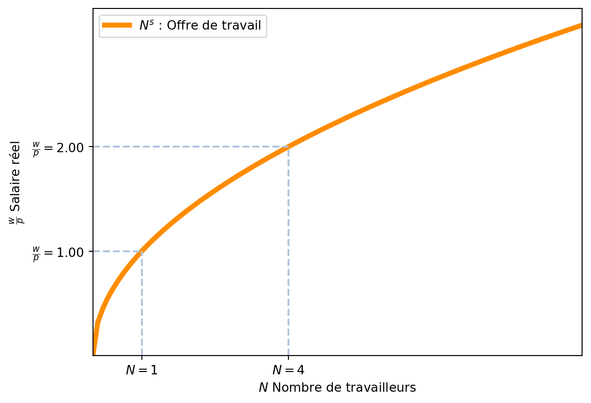
La Figure 3.3 montre la relation entre le salaire réel et l’offre de travail. Par exemple, si le salaire réel est de 1.0, les ménages souhaitent offrir 1 travailleurs. Quand le salaire réel augmente à 2.0, les ménages souhaitent offrir 4 travailleurs.
3.1.3 Équilibre
Nous sommes maintenant en mesure de déterminer l’équilibre sur le marché du travail. La fonction de demande de travail \(N^d\) indique combien de travailleurs les entreprises souhaitent embaucher pour un salaire réel donné \(\left(\frac{w}{p}\right)\). De la même manière, la fonction d’offre de travail \(N^s\) indique combien de travailleurs souhaitent travailler pour un salaire réel donné \(\left(\frac{w}{p}\right)\). Le marché du travail est en équilibre lorsque la demande de travail est égale à l’offre de travail, c’est-à-dire lorsque \(N^d = N^s\). Un seul salaire réel est compatible avec l’équilibre sur le marché du travail: celui qui égalise l’offre et la demande de travail. En effet, imaginons que l’économie soit en équilibre avec un salaire réel \(\frac{w}{p}\) et que nous augmentions le salaire réel. Quand il augmente, la demande de travail diminue et l’offre de travail augmente. Ainsi, il y a un excédent d’offre de travail. Et à l’inverse, si le salaire réel diminue, la demande de travail augmente et l’offre de travail diminue. Nous pouvons le représenter graphiquement dans la Figure 3.4. L’équilibre est indiqué par le point d’intersection entre la courbe de demande de travail et la courbe d’offre de travail.
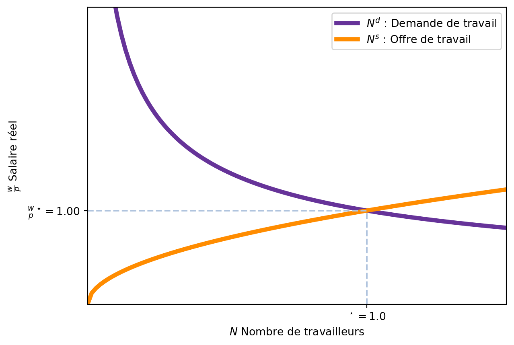
3.1.4 Synthèse
Selon le modèle classique, le marché du travail est en équilibre lorsque la demande de travail est égale à l’offre de travail. L’offre de travail est déterminée par les travailleurs, qui choisissent combien de temps travailler en fonction du salaire réel (\(\frac{w}{p}\)). Ainsi, seul un changement dans les préférences des travailleurs peut affecter l’offre de travail: par exemple, si les travailleurs préfèrent travailler moins, l’offre de travail diminue. De la même manière, la demande de travail est déterminée par les entreprises, qui choisissent combien de travailleurs embaucher en fonction du salaire réel (\(\frac{w}{p}\)). Des changements dans la technologie affectent la demande de travail: par exemple, si la technologie s’améliore, les entreprises embauchent plus de travailleurs. En plus, comme \(\bar{K}\), si le capital augmente, la demande de travail augmente également.
D’après les économistes classiques:
- Le salaire réel est déterminé par la technologie et les préférences des travailleurs.
- Une augmentation de la technologie augmente la productivité des travailleurs, ce qui augmente le salaire réel.
- Une réduction des préférences des travailleurs pour le loisir augmente l’offre de travail, ce qui reduit le salaire réel.
Une fois que le salaire réel est déterminé, cela détermine le nombre de travailleurs d’équilibre \(N^\star\). Comme la production totale est une fonction de la quantité de capital et du nombre de travailleurs, on peut en déduire le PIB d’équilibre \(Y^\star\). \[ Y^\star = F(\bar{K}, N^\star) \]
Détermination du PIB
Dans le modèle classique, le PIB est déterminé par la fonction de production, le capital (fixe et exogène) et le nombre de travailleurs d’équilibre. Cela implique que le PIB est déterminé par la technologie et les préférences des travailleurs. En effet, la technologie affecte la fonction de production, et cela affecte la dérivée \(F_{N}\). Une meilleure technologie augmente permet de produire plus avec le même nombre de travailleurs, augmentant leur productivité marginale. Comme les entreprises égalisent productivité marginale et salaire réel, une meilleure technologie augmente le salaire réel.
De plus, une augmentation de l’offre de travail (par exemple, si les travailleurs préfèrent travailler plus) augmente le nombre de travailleurs d’équilibre et diminue le salaire réel.
Une fois le nombre de travailleurs d’équilibre connu, cela implique un niveau de production dans l’économie. Sauf un changement dans la technologie ou les préférences des travailleurs, le PIB d’équilibre est constant.
La Figure 3.5 montre l’impact d’une augmentation de la demande de travail sur le marché du travail. En effet, si la technologie s’améliore, la fonction de production augmente et donc la demande de travail augmente. Nous avons donc une nouvelle fonction de demande de travail \(N^d_2\). le nouveau point d’équilibre est donné par le point d’intersection entre la nouvelle fonction de demande de travail et la fonction d’offre de travail, et la quantité de travail d’équilibre augmente. Par consequent, le PIB d’équilibre augmente également.
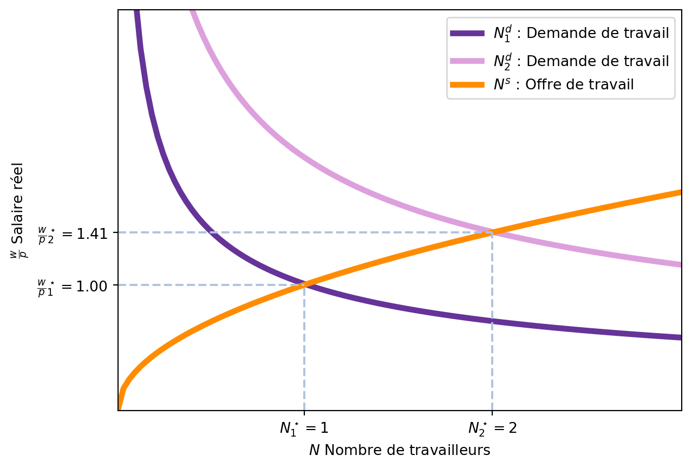
De manière analogue, si l’offre de travail augmente (par exemple, si les travailleurs préfèrent travailler plus), la fonction d’offre de travail augmente et le point d’équilibre se déplace vers la droite. Ceci est représenté dans la Figure 3.6. La nouvelle fonction d’offre de travail est \(N^s_2\) et le nouveau point d’équilibre est donné par le point d’intersection entre la nouvelle fonction d’offre de travail et la fonction de demande de travail, et la quantité de travail d’équilibre augmente. Comme avant, le PIB d’équilibre augmente également.
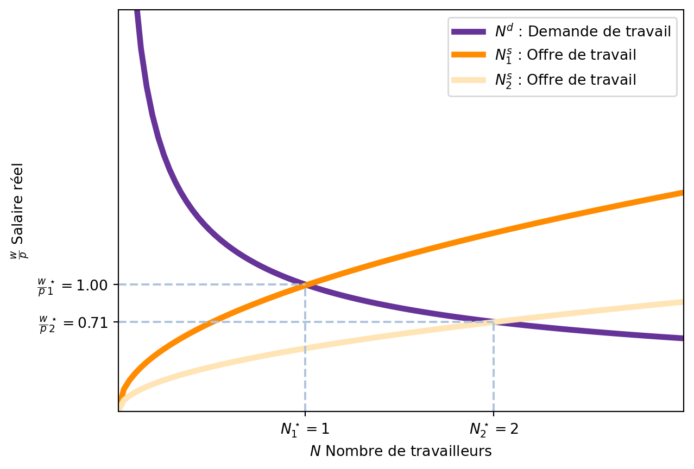
3.1.5 Le chômage lors de la Grande Dépression pour les classiques
Lors de la Grande Dépression, le chômage était très élevé et le PIB avait chuté de manière importante. Les estimations indiquent un taux de chômage de 25% aux États-Unis et des reductions du PIB de 30%. En simultané, le salaire réel avait augmenté un peu à cause de la baisse des prix. Comme le salaire réel est \(\frac{w}{p}\), une baisse des prix \(p\) augmente le salaire réel.
Les économistes classiques ont tenté d’expliquer ce phénomène en disant que les travailleurs préféraient travailler moins. En effet, d’après le modèle classique, est la seule explication possible.
- Le salaire réel n’augemene que si:
- La productivité marginale du travail augmente (ce qui n’est pas le cas)
- Le nombre de travailleurs diminue (ce qui est le cas)
- Avec moins de travailleurs, la production diminue.
Le gouvernement ne devrait pas intervenir pour réduire le chômage car il s’agissait d’un changement dans les préférences des travailleurs: ils voulaient travailler moins. La Figure 3.5 et Figure 3.6 montrent comment un changement exogène affecte l’équilibre sur le marché du travail. Enfin, quand le niveau d’emploi change, la production se modifie aussi.
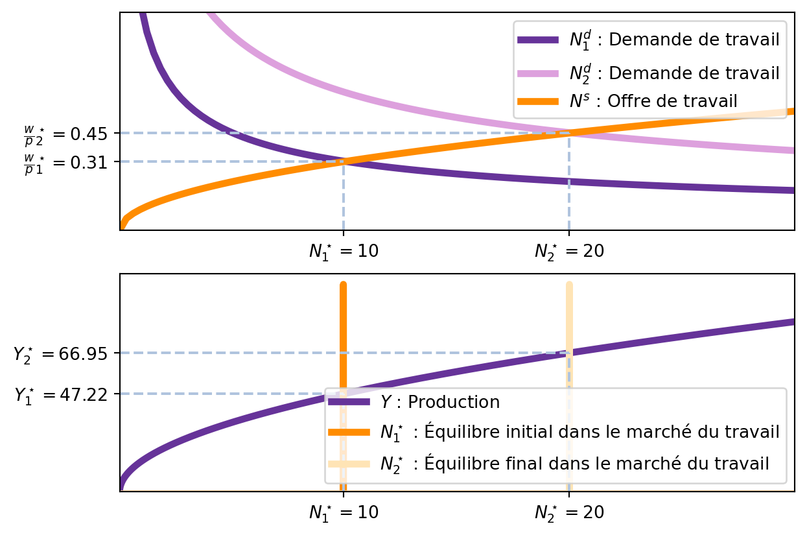
3.2 Marché de la monnaie
3.2.1 Demande de monnaie
Le deuxième marché important dans le modèle classique est le marché de la monnaie.
Note
La monnaie est un actif qui sert comme:
- Un moyen d’échange: elle est utilisée pour acheter des biens et services.
- Une unité de compte: elle est utilisée pour mesurer la valeur des biens et services.
- Une réserve de valeur: elle est utilisée pour stocker de la valeur dans le temps.
Pour le comprendre le modèle classique, nous allons nous concentrer sur la monnaie comme moyen d’échange.
La demande de monnaie est la quantité de monnaie que les agents économiques souhaitent détenir. Elle s’exprime en termes d’encaisses réelles, c’est-à-dire la quantité de monnaie divisée par le niveau de prix. Cela fait sens car la monnaie est utilisée pour acheter des biens et services, et donc elle doit être exprimée en termes de biens et services. Par exemple, avoir un billet de 200 euros ne sert à rien si le prix d’une baguette est de 200 euros.
Or, la question est: pourquoi les agents économiques souhaitent-ils détenir de la monnaie? La réponse est simple: ils souhaitent détenir de la monnaie pour acheter des biens et services car l’alternative serait de détenir des actifs financiers et les vendre pour acheter des biens et services, ce qui est coûteux en temps.
La théorie quantitative de la monnaie est une théorie simple qui explique pourquoi les agents économiques souhaitent détenir de la monnaie et comment la quantité de monnaie dans l’économie affecte le niveau des prix. Selon cette théorie, la demande de monnaie est proportionnelle à:
- Le niveau de production: plus la production est élevée, plus les agents économiques ont besoin de monnaie pour acheter des biens et services.
- Le niveau des prix: plus les prix sont élevés, plus les agents économiques ont besoin de monnaie pour acheter des biens et services.
- La vitesse de circulation de la monnaie: plus la vitesse de circulation de la monnaie est élevée, moins les agents économiques ont besoin de monnaie pour acheter des biens et services.
Ainsi:
\[ M V = P Y \tag{3.6}\]
où \(M\) est la quantité de monnaie, \(V\) est la vitesse de circulation de la monnaie, \(P\) est le niveau des prix et \(Y\) est le niveau de production. La vitesse de circulation de la monnaie est le nombre de fois qu’une unité de monnaie est utilisée pour acheter des biens et services dans une période donnée. L’équation indique la valeur totale des transactions dans l’économie (\(P Y\)) est égale à la quantité de monnaie multipliée par la vitesse de circulation de la monnaie (\(M V\)).
On voit clairement que la demande de monnaie est une fonction croissante et proportionelle du niveau de production (PIB) et du niveau des prix (et une fonction décroissante de la vitesse de circulation de la monnaie).3
3.2.2 Offre de monnaie
L’offre de monnaie est la quantité de monnaie que la banque centrale met en circulation dans l’économie. Comme la banque centrale a le monopole de la création monétaire, elle détermine l’offre de monnaie. Ainsi, l’offre de monnaie est:
\[ M^s = \bar{M} \tag{3.7}\]
où \(\bar{M}\) est la quantité de monnaie que la banque centrale décide de mettre en circulation.
3.2.3 Équilibre
Comme pour le marché du travail, l’équilibre sur le marché de la monnaie est atteint lorsque la demande de monnaie (Equation 3.6) est égale à l’offre de monnaie (Equation 3.7). Pour une vitesse de circulation de la monnaie conue (\(\bar{v}\)) et un niveau de production exogène (\(\bar{Y}\)) car il est établie par le marché du travail (voir Section 3.1), l’équilibre implique un certain niveau de prix \(p\) tel que la quantité de monnaie demandée est égale à la quantité de monnaie offerte, c’est-à-dire:
\[ \bar{M} = \bar{v} p \bar{Y} \tag{3.8}\]
En réarrangeant cette équation, on obtient l’équation d’équilibre du marché de la monnaie, le niveau de prix d’équilibre \(p\) est donné par:
\[ p = \frac{1}{v \bar{Y}} \bar{M} \tag{3.9}\]
Note
Cette équation indique que le niveau de prix d’équilibre est proportionnel à l’offre de monnaie (\(\bar{M}\)) et inversement proportionnel à la vitesse de circulation de la monnaie (\(\bar{v}\)) et au niveau de production (\(\bar{Y}\)).
Sur le plan \(Y-p\), nous pouvons représenter la condition d’équilibre du marché de la monnaie. Comme en équilibre \(M^d = M^s = \bar{M}\), nous avons que:
\[ \bar{M} = \bar{v} p \bar{Y} \implies p = \frac{1}{\bar{v}\bar{Y}} \bar{M} \tag{3.10}\]
Enfin, comme \(\bar{Y}\) est exogène, nous pouvons le considérer comme une constante qui se répresente par une droite verticale.
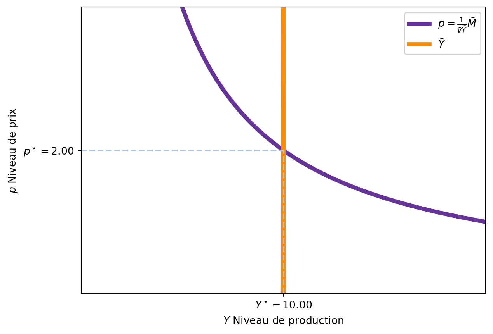
Note
Dans l’analyse du marché de la monnaie, il est important de noter que le niveau de production (\(\bar{Y}\)) est exogène. Ceci sera une différence importante avec le modèle IS-LM, où le niveau de production est endogène et déterminé par l’équilibre sur le marché des biens.
Dans le modèle classique, si la banque centrale décide d’augmenter l’offre de monnaie, cela n’affecte pas le niveau de production (\(\bar{Y}\)) car celui-ci est déterminé par le marché du travail et la fonction de production. La seule influence est sur le niveau des prix (\(p\)), qui augmente en conséquence. Suite à l’augmentation de l’offre de monnaie, les agents économiques détiennent plus de monnaie, et souhaitent faire plus d’achats. Cependant, comme la production est fixe, cette augmentation de la demande se traduit par une augmentation des prix. La Figure 3.9 montre comment l’augmentation de l’offre de monnaie déplace la courbe de demande de monnaie vers le haut, augmentant le niveau des prix d’équilibre.
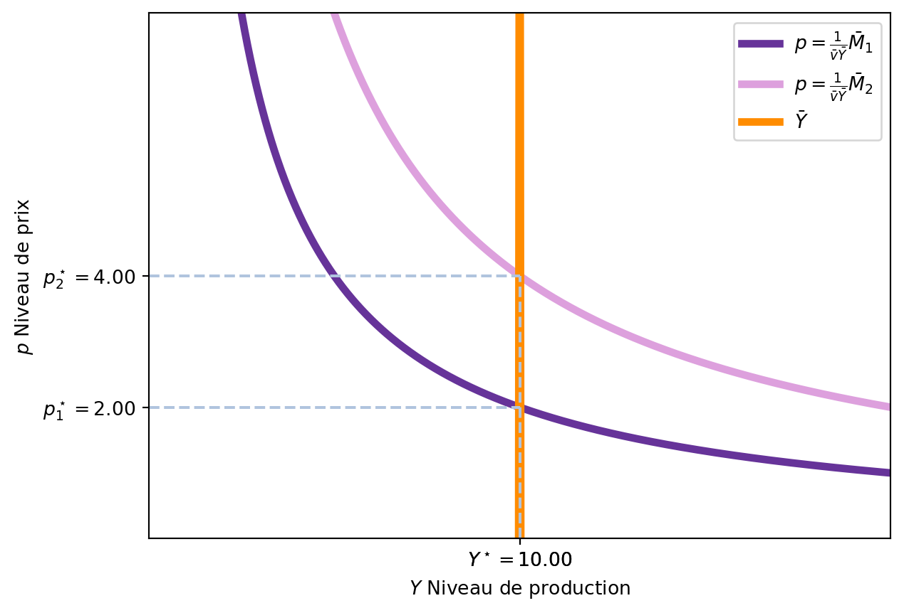
3.2.4 Implications de la théorie quantitative de la monnaie dans le modèle classique
Une caractéristique importante de la pensée classique est que les prix s’ajustent immédiatement pour garantir l’équilibre sur n’importe quel marché. Ainsi, pour les économistes classiques, les augmentations de l’offre de monnaie ne changent pas le niveau de production, mais seulement le niveau des prix, créant de l’inflation.
En effet, si le niveau de prix d’équilibre est donné par Equation 3.9, nous pouvons en déduire que le taux de croissance des prix (\(\gamma_p\)) est donné par:
\[ p = \frac{1}{\bar{v}\bar{Y}} \bar{M} \implies \gamma_p = \gamma_M - \gamma_Y \tag{3.11}\]
où \(\gamma_x\) indique le taux de croissance de la variable \(x\) et on fait l’hypothèse que la vitesse de circulation de la monnaie (\(\bar{v}\)) est constante à court terme.
Les économistes Pedro Teles, Harald Uhlig et João Valle e Azevedo ont étudié si les augmentations de l’offre monétaire entraînent effectivement de l’inflation (une fois la croissance du PIB prise en compte). De manière simple, ils tracent le taux de croissance de l’offre monétaire nette de la croissance économique (\(\gamma_M - \gamma_Y\)) contre le taux de croissance des prix (\(\gamma_p\)) et trouvent une relation positive. Selon la Figure 3.10, notre théorie quantitative de la monnaie est assez acceptable.
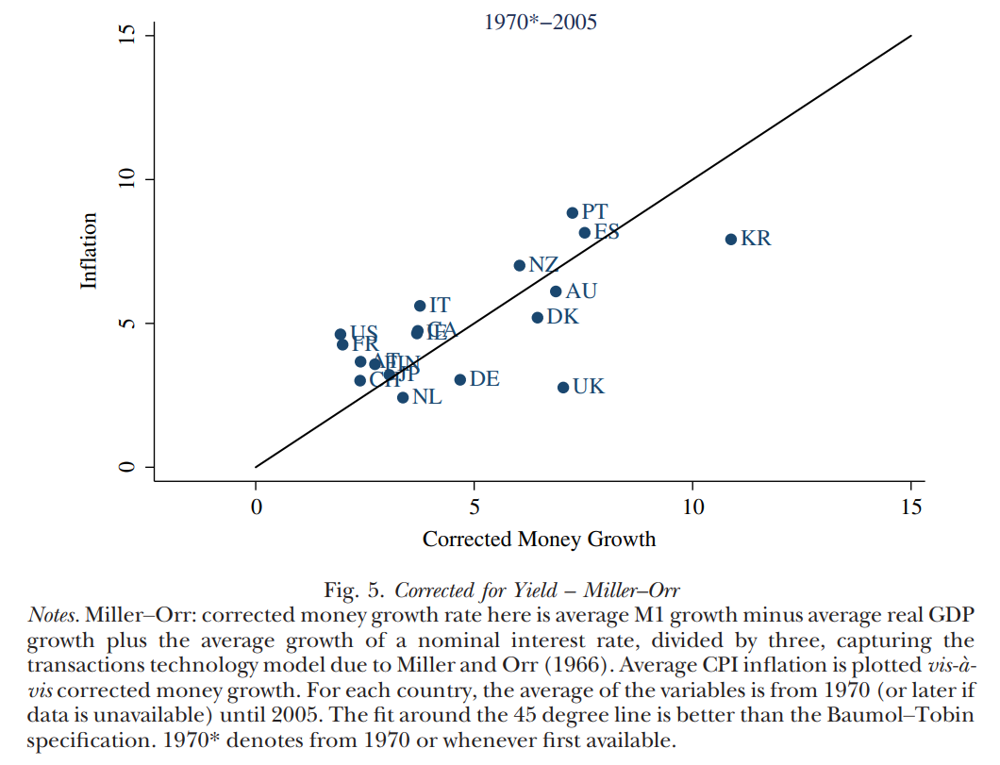
3.3 Marché de l’emprunt
Le troisième marché important dans le modèle classique est le marché de l’emprunt, qui fonctionne de manière autonome des autres marchés, sans les influencer.
Le marché de l’emprunt est le marché où les entreprises empruntent de l’argent pour financer leurs investissements. L’offre de fonds prêtables provient de l’épargne des ménages et du gouvernement, tandis que la demande de fonds prêtables provient des entreprises qui souhaitent investir. Enfin, le taux d’intérêt est déterminé par l’offre et la demande de fonds prêtables.
3.3.1 Offre de fonds prêtables
L’offre de fonds prêtables est la quantité de fonds que les ménages et le gouvernement souhaitent prêter. Nous pouvons le déterminer à partir de l’identité comptable de l’économie, qui est la somme de la consommation, de l’investissement et des dépenses publiques.
\[ Y = c(Y-\bar{T}) + I(r) + \bar{G} \tag{3.12}\]
L’Equation 3.12 indique que, pour un pays fermé, le PIB (tout ce qui est produit, \(Y\)) est égal à la consommation des ménages (\(c\)), l’investissement des entreprises (\(I\)) et les dépenses publiques (\(\bar{G}\)). Il faut noter que la consommation des ménages dépend du revenu disponible, c’est-à-dire le revenu total moins les impôts (\(Y - \bar{T}\)), et l’investissement est une fonction décroissante du taux d’intérêt (\(r\)). Finalement, les dépenses publiques sont exogènes et ne dépendent pas du taux d’intérêt par hypothèse.
Si nous réarrangeons l’équation, nous obtenons:
\[ Y - c(Y-\bar{T}) - \bar{G} = I(r) \tag{3.13}\]
La partie gauche de l’équation représente l’épargne totale de l’économie, qui est égale à l’investissement des entreprises (\(I(r)\)) pour un taux d’intérêt donné (\(r\)). Cette épargne totale est la somme de l’épargne des ménages et de l’épargne du gouvernement.
Nous pouvons vérifier que cette équation est cohérente avec l’identité comptable de l’économie. Commençons par calculer l’épargne des ménages (\(S^P\)) et l’épargne du gouvernement (\(S^G\)):
L’épargne des ménages est donnée par la différence entre le revenu disponible et la consommation des ménages: \[ S^P = Y - \bar{T} - c(Y - \bar{T}) \]
Du côté du gouvernement, l’épargne est la différence entre les impôts et les dépenses publiques: \[ S^G = \bar{T} - \bar{G} \]
En combinant les deux, nous obtenons l’épargne totale de l’économie (\(S\)):
\[ S = S^P + S^G = Y - \bar{T} - c(Y - \bar{T}) + \bar{T} - \bar{G} = Y - c(Y-\bar{T}) - \bar{G} \tag{3.14}\]
Note
Notez que les impôts réduisent l’épargne privée et augmentent l’épargne publique du même montant. En effet, les impôts sont un transfert de ressources entre les individus et le gouvernement.
Un autre aspect important, et peut-être peu réaliste, est que l’épargne des ménages ne depend pas du taux d’intérêt. On pourrait modifier cette hypothèse, par exemple, en rendant la consommation des ménages une fonction décroissante du taux d’intérêt, ce qui signifierait que les ménages préfèrent épargner plus lorsque le taux d’intérêt est élevé; ou, de manière équivalente, ne pas s’endetter autant pour financer leur consommation.
Comme toutes les variables sont exogènes, l’offre de fonds prêtables est une droite verticale.
3.3.2 Demande de fonds prêtables
La demande de fonds prêtables est la quantité de fonds que les entreprises souhaitent emprunter pour financer leurs investissements. La demande de fonds prêtables est une fonction décroissante du taux d’intérêt, car les entreprises préfèrent emprunter moins lorsque le coût de l’emprunt (le taux d’intérêt) est élevé.
3.3.3 Demande de fonds prêtables
La demande de fonds prêtables est une fonction décroissante du taux d’intérêt. En effet, les entreprises doivent rembourser leurs emprunts et, si le taux augmente, elles préfèrent ne pas emprunter autant.
3.3.4 Équilibre
L’équilibre sur le marché de l’emprunt est atteint lorsque l’offre de fonds prêtables est égale à la demande de fonds prêtables. En utilisant l’identité comptable de l’économie (Equation 3.13), nous pouvons écrire l’équilibre du marché de l’emprunt comme suit:
\[ S = S^P + S^G = Y - c(Y-\bar{T}) - \bar{G} = I(r) \tag{3.15}\]
Si nous traçons l’offre et la demande de fonds prêtables sur un graphique sur le plan \((Y, r)\), nous obtenons l’équilibre du marché de l’emprunt.
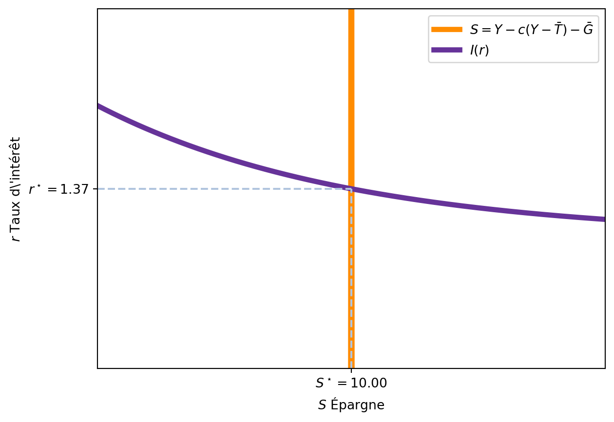
La Figure 3.11 montre l’équilibre sur le marché de l’emprunt.
3.3.5 Effet d’une augmentation des dépenses publiques
Si le gouvernement décide d’augmenter ses dépenses publiques, cela affecte l’offre de fonds prêtables. En effet, l’offre de fonds prêtables est donnée par:
\[ S = Y - c(Y-\bar{T}) - \bar{G} \]
Ainsi, si le gouvernement augmente ses dépenses publiques (\(\bar{G}\)), l’offre de fonds prêtables diminue. Une autre manière de dire le même est que le gouvernement augmente le déficit budgétaire, ce qui réduit l’épargne disponible pour les investissements privés. Comme une partie plus importante de la production est utilisée pour financer les dépenses publiques, il y a moins de fonds disponibles pour les investissements privés. En conséquence, le taux d’intérêt augmente pour équilibrer l’offre et la demande de fonds prêtables.
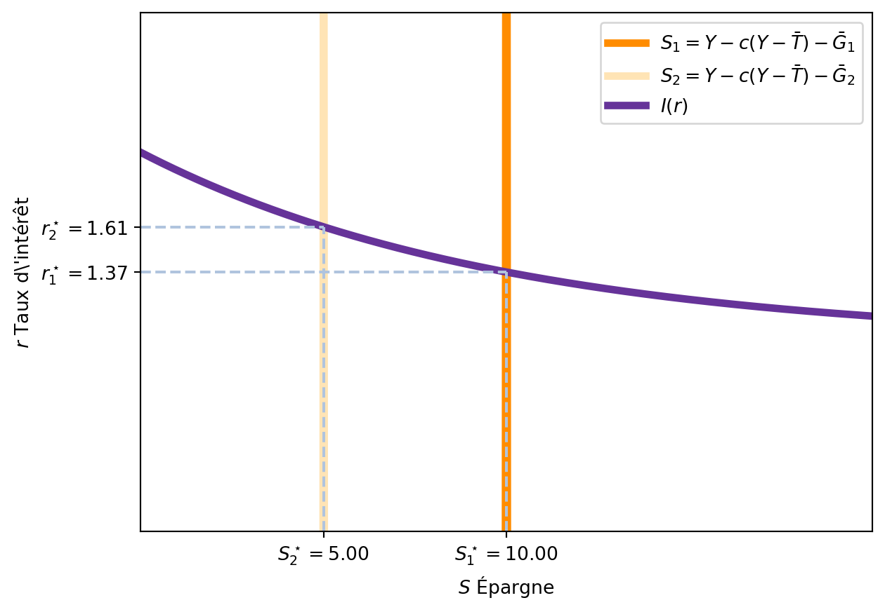
Effet d’éviction
L’effet d’une augmentation des dépenses publiques est connu sous le nom d’effet d’éviction (crowding out). En effet, l’augmentation des dépenses publiques réduit l’épargne disponible pour les investissements privés, ce qui augmente le taux d’intérêt et réduit l’investissement privé.
4 Synthèse du modèle classique
Dans le modèle classique, les trois marchés (marché du travail, marché de la monnaie et marché de l’emprunt) sont interconnectés et déterminent l’état de l’économie.
Le marché du travail détermine le salaire réel \(\frac{w}{p}\) et le nombre de travailleurs \(N^\star\). De manière indirecte, le marché du travail détermine aussi le niveau de production global de l’économie, car la fonction de production indique que la production est une fonction du capital et du travail: \(\bar{Y} = F(\bar{K}, N^\star)\).
Le marché de la monnaie ajuste le niveau des prix \(p\) pour que l’offre de monnaie coïncide avec le niveau de production (en considérant la vitesse de circulation de la monnaie). Avec le niveau de prix \(p\), le salaire nominal est aussi établi : \(w = \frac{w}{p} \times p.\)
Le marché de l’emprunt détermine le taux d’intérêt \(r\) en fonction de l’offre et de la demande de fonds prêtables. L’offre de fonds prêtables est déterminée par l’épargne des ménages et du gouvernement, et donc dépendent du PIB, tandis que la demande de fonds prêtables est déterminée par l’investissement des entreprises.
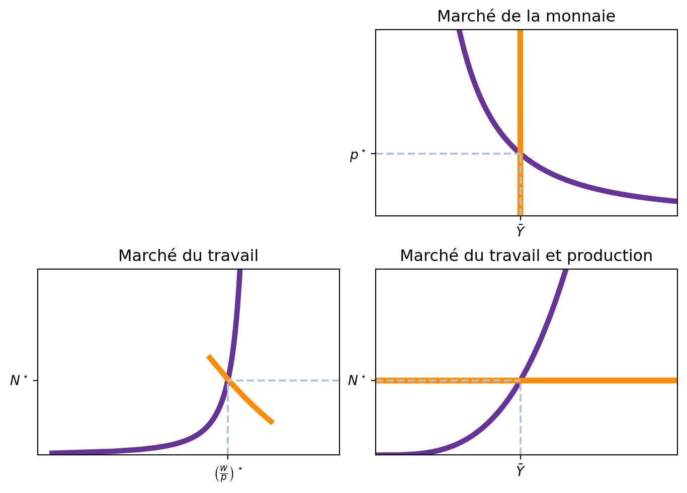
Un cadre simple de réflexion sur l’économie suit la logique suivante:
- Le marché du travail détermine le salaire réel et le nombre de travailleurs.
- Le marché de la monnaie ajuste le niveau des prix pour que l’offre de monnaie coïncide avec le niveau de production.
- Le marché de l’emprunt détermine le taux d’intérêt en fonction de l’offre et de la demande de fonds prêtables.
Pour analyser l’impact d’une politique économique, il suffit de regarder comment elle affecte l’un de ces marchés.
4.1 Politique budgétaire et monétaire
Aujourd’hui, il est courant de penser que les politiques budgétaire et monétaire peuvent influencer la production et le taux de chômage, et aider à sortir d’une crise économique. Ces idées sont issues du modèle keynésien, qui est en opposition avec le modèle classique. Nous allons voir comment les économistes classiques voient ces politiques, et que dans le système classique, ces politiques n’ont pas d’impact sur la production ou le taux de chômage, mais seulement sur les variables nominales comme le niveau des prix et le taux d’intérêt. C’est-à-dire que les politiques budgétaire et monétaire ne peuvent pas influencer l’économie réelle et, par conséquent, ne peuvent pas aider à sortir d’une crise économique.
4.1.1 Politique budgétaire: augmentation des dépenses publiques
Dans le modèle classique, les depenses du gouvernement apparaissent seulement dans l’équilibre du marché de l’emprunt, comme une partie de l’offre de fonds prêtables. Ainsi, une augmentation des dépenses publiques n’a pas d’impact sur le PIB ou le taux de chômage. En effet, l’augmentation des dépenses publiques se traduit par une diminution des fonds disponibles pour les investissements privés, ce qui augmente le taux d’intérêt et réduit l’investissement privé (effet d’éviction).
Mathématiquement, une augmentation de \(G\) (dépenses publiques) dans l’équation d’équilibre du marché de l’emprunt (Equation 3.13) se traduit par:
\[ \begin{aligned} S^G \downarrow &= \bar{T} - \bar{G} \uparrow \implies S \downarrow = S^P + S^G \downarrow \\ S \downarrow &= I(r) \downarrow \implies r \uparrow \end{aligned} \]
Effets dynamiques
Dans le modèle classique, les effets d’une augmentation des dépenses publiques sont immédiats. Ils se traduisent par une augmentation du taux d’intérêt et une diminution de l’investissement privé, sans impact sur le PIB ou le taux de chômage. Cependant, si le niveau d’investissement privé diminue, cela peut avoir des effets à long terme sur la croissance économique, car moins d’investissement signifie moins de capital demain. Comme \(Y = F(K,N)\), une diminution de l’investissement réduit le capital disponible pour la production à long terme, et donc diminue la production future. L’étude dynamique de ces effets fait partie du cours de Macroéconomie Dynamique, mais un exercice simple vous est proposé.
Suivant notre cadre logique:
- Le marché du travail reste inchangé, car les dépenses publiques n’affectent pas le salaire réel ou le nombre de travailleurs.
- Le marché de la monnaie reste inchangé, car l’offre de monnaie n’est pas affectée par les dépenses publiques.
- Le marché de l’emprunt est affecté par l’augmentation des dépenses publiques, ce qui augmente le taux d’intérêt et réduit l’investissement privé. La Figure 3.12 montre comment l’augmentation des dépenses publiques déplace la courbe d’offre de fonds prêtables vers le bas, augmentant le taux d’intérêt d’équilibre.
4.1.2 Augmentation de l’offre de monnaie
Dans le modèle classique, l’offre de monnaie est déterminée par la banque centrale et est considérée comme exogène. Si la banque centrale décide d’augmenter l’offre de monnaie, cela n’affecte pas le PIB ou le taux de chômage. En effet, l’augmentation de l’offre de monnaie se traduit par une augmentation du niveau des prix, sans impact sur la production.
Selon notre cadre logique: 1. Le marché du travail reste inchangé, car l’offre de monnaie n’affecte pas le salaire réel ou le nombre de travailleurs. 2. Le marché de la monnaie est affecté par l’augmentation de l’offre de monnaie, ce qui augmente le niveau des prix. 3. Le marché de l’emprunt reste inchangé, car l’offre de monnaie n’affecte pas l’offre ou la demande de fonds prêtables.
Pour voir comment l’augmentation de l’offre de monnaie affecte le marché de la monnaie, nous pouvons partir de l’équation d’équilibre du marché de la monnaie (Equation 3.9): Nous avons:
\[ p = \frac{1}{\bar{v}\bar{Y}} \bar{M} \]
Nous pouvons voir que si la banque centrale augmente l’offre de monnaie (\(\bar{M}\)), le niveau des prix (\(p\)) augmente proportionnellement. La Figure 3.9 montre comment l’augmentation de l’offre de monnaie déplace la courbe de demande de monnaie vers le haut, augmentant le niveau des prix d’équilibre.
4.1.3 La crise de 1929 pour les économistes classiques
Dans le modèle classique, la crise de 1929 est vue comme une conséquence naturelle du fonctionnement des marchés. Les données dont ils disposaient à l’époque montraient que le taux de chômage était élevé, la production était faible et les prix étaient en baisse. Ils interprétaient cela comme une conséquence de l’optimisation individuelle des agents économiques, qui avaient décidé de travailler moins et de consommer moins.
Dans ce cadre, les économistes classiques ne voyaient pas la nécessité d’intervenir pour résoudre la crise, car comme nous l’avons vu, toute intervention gouvernementale ou augmentation de l’offre de monnaie n’aurait qu’un effet sur les variables nominales (comme le niveau des prix) et non sur les variables réelles (comme le PIB ou le taux de chômage).
Suivant notre cadre logique, ils auraient dit: La seul explication pour la diminution de la production est soit un changement dans la fonction de production, soit un changement dans les préférences des individus. Comme le salaire réel a augmenté, ils concluent que la fonction de production n’a pas changé, mais que les individus ont décidé de travailler moins.
4.2 TD
Si l’on suppose une fonction de production classique \(Y=K^\alpha N^{1-\alpha}\), est-ce que le produit marginal du travail augmente ou diminue quand le capital augmente? Montrez l’effet d’une augmentation du capital sur le nombre de travailleurs et la production.
Imaginons que l’économie connaît une expansion soudaine du niveau de capital. Qu’elle est l’effet sur le taux d’intérêt d’équilibre?
Quel est l’effet de l’introduction d’une taxe sur le revenu du travail à payer par les travailleurs sur le niveau de prix?
Lors du débat pour les élections présidentielles des USA en 1984, Walter Mondale disait “on est tous d’accord que le déficit du gouvernement affecte le taux d’intérêt”. Selon le modèle classique, est-ce vrai ou faux ?
Imaginez une économie classique avec une fonction de production \(Y_t=K_t^{\frac{1}{3}} \bar{N}^{\frac{2}{3}}\). Veuillez noter que le nombre de travailleurs est fixe, disons que \(\bar{N} = 1000\) toujours. Cela implique que l’offre de travail est une droite verticale à \(N=\bar{N}=1000.\) Notons aussi que le niveau de capital \(K\) n’est pas fixe, mais il change avec le temps: nous avons écrit \(Y_{t}\) et \(K_{t}\) !.
- Pendant la première année \(t=0\), les dépenses publiques sont \(G_0 = 100\).
- La consommation des ménages est \(C_t = 0.8 Y_t\).
- Les impôts sont 0.
Pour montrer à quoi sert l’investissement, notre économie est dynamique. Ainsi, le niveau de capital change avec les investissements selon
\[ K_{t+1} = K_t + I_t - \delta K_t \]
où \(\delta = 0.1\) est la dépréciation du capital. L’équation indique que, si aujourd’hui le capital est \(K_t = 100\), l’investissement est \(I_t = 20\), demain le capital sera \(100 + 20 - 0.1 \times 100 = 110.\)
- Si le niveau de capital initial \(K_0 = 500\), calculez le niveau de capital à long-terme, quand \(t\rightarrow \infty\). Astuce: trouvez une fonction qui relie \(K_{t+1}\) et \(K_t\) et, ensuite, utilisez Excel pour itérer pendant plusieurs périodes.
Aujourd’hui, une large partie des modèles s’inspirent du modèle classique : les modèles néo-classiques. De plus, des modèles inspirés par le modèle IS-LM offrant des raisons pour les interventions économiques du gouvernement lors de crises s’appellent modèles néo-keynésiens.↩︎
Cette partie du cours est inspirée des notes de cours de Peter Thompson↩︎
Aujourd’hui, une large partie des modèles s’inspirent du modèle classique : les modèles néo-classiques. De plus, des modèles inspirés par le modèle IS-LM offrant des raisons pour les interventions économiques du gouvernement lors de crises s’appellent modèles néo-keynésiens.↩︎